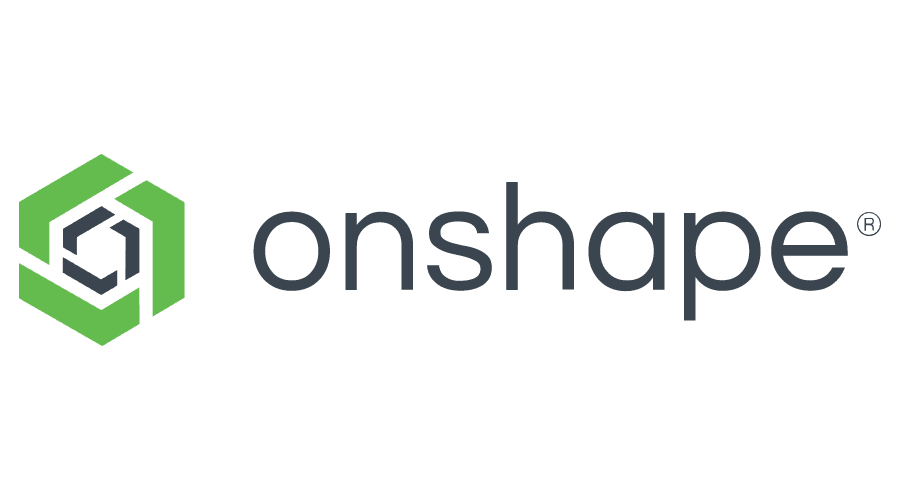
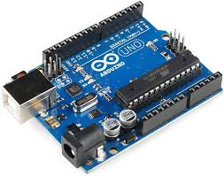

Bitácora
Acá registraré el progreso de mis clases.
Sesión 3
En la sesión 3, exploramos GitHub y Visual Studio Code. Descubrimos cómo Visual Studio Code facilita el desarrollo colaborativo con sus extensiones y su integración con Git. También aprendimos a utilizar GitHub para gestionar repositorios, ramas y solicitudes de extracción, lo que nos permite colaborar de manera efectiva en proyectos de software.

Sesión 4
En la sesión 4, adquirimos habilidades de programación utilizando una plantilla como base. Exploramos cómo esta plantilla nos proporciona una estructura inicial para nuestros proyectos, facilitando el proceso de desarrollo al brindarnos un punto de partida sólido. Aprendimos a personalizar y expandir esta plantilla según nuestras necesidades específicas, lo que nos permite crear aplicaciones más eficientes y robustas.

Sesión 5
En la sesión 5, pusimos en práctica nuestras habilidades de programación al desarrollar y presentar nuestra página web. Utilizando los conocimientos adquiridos previamente, creamos una página web desde cero, aplicando HTML, CSS y posiblemente JavaScript para dar vida a nuestro diseño. Durante la presentación, compartimos nuestro trabajo con el grupo, destacando los aspectos clave del diseño, la funcionalidad y las decisiones de desarrollo. Esta experiencia no solo nos permitió aplicar lo aprendido, sino también mejorar nuestras habilidades de comunicación y recibir retroalimentación constructiva de nuestros compañeros.
Sesión 6
En la sesión 6, presentamos nuestra solución para abordar la problemática del abuso sexual en colegios. Tras un intenso trabajo grupal, desarrollamos un enfoque integral que incluye medidas de prevención, detección temprana y apoyo a las víctimas. Nuestra solución se basa en la educación sobre el consentimiento y la sexualidad responsable, la implementación de políticas de protección y protocolos de acción claros, así como la creación de espacios seguros para que los estudiantes puedan expresar sus preocupaciones de manera confidencial. Durante la presentación, destacamos la importancia de la colaboración entre estudiantes, personal escolar, familias y comunidades para abordar esta problemática de manera efectiva y crear un entorno escolar seguro y respetuoso para todos.
Sesión 7
En la sesión 7, Nos introdujimos al uso de OnShape, una herramienta para el modelado 3D. Fue una experiencia desafiante para nosotros, especialmente para mí, ya que era mi primer contacto con ese software y me resultó casi indescifrable.
Sesión 8
En la sesión 8, Nos dedicamos a hacer un repaso del modelado 3d utilizando OneShape, como había mencionado antes, resulto super difícil por ser algo nuevo, por lo que fue necesario reforzar conocimientos.
Sesión 9
En la sesión 9, Nos dedicamos ahora sí a enfocarnos a fondo en nuestro proyecto grupal, el Sensidoll, teniendo en cuenta mas las funciones a cumplir y como sería físicamente, realizamos bocetos e investigamos tecnologías a aplicar.

Sesión 10
En la sesión 10, presentamos nuestras ideas sobre el proyecto, bocetos, la lista de funciones, las tecnologías que usaríamos, definimos el usuario mediante el Customer Journey Map.
Sesión 11
En la sesión 11, Dejamos un poco de lado el Sensidoll y aprendimos sobre Arduino, funcionamiento de circuitos y tecnologías para utilizar y hacer nuestro proyecto realmente funcional, además aprendimos sobre inputs y outputs.
Sesión 12
En la sesión 12, Presentamos un prototipo, muy sencillo, físico que indicaba a groso modo el funcionamiento y simulamos la experiencia ofrecida por el mismo.
Sesión 13
En la sesión 13, presentamos nuestro proyecto de una forma algo más detallada, con tecnologías más especificadas, lista de funciones, inputs y outputs, además de un diagrama de flujo con los escenarios y cambios propios de las reacciones de nuestro Sensidoll.

Sesión 14
En la sesión 14, seguimos mostrando avances de nuestro proyecto, reemplazamos ciertas cosas para hacerlo menos costoso y más asequible, seguimos recomendaciones del profesor y lo encaminamos aún más para lograr realizarlo.

Sesión 15
En la sesión 15, seguimos mostrando avances de nuestro proyecto, definimos ahora sí el circuito final, especificamos el funcionamiento (lista de funciones) y nos enfocamos en costos para tener una idea clara de cuánto nos costaría la realización de este proyecto.
Sesión 16
En la sesión 16, presentamos finalmente nuestro proyecto en la exposición final de promedio 2.

En la sesión 17, continuamos desarrollando nuestro proyecto, coordinando la parte de cada uno.
En la sesión 18, Nos dedicamos de lleno al proyecto Sensidoll, tenemos que hacerlo realidad.
En la sesión 19, Presentamos avances y siguiendo el consejo del profesor, retocamos un poco el diseño
En la sesión 20, Planificamos mejor el código y los circuitos a usar paa poder hacer realidad a nuestro Sensidoll.
En la sesión 21, Nos pusimos a actualizar la página del proyecto grupal con todas las actualizaciones y por menores de Sensidoll
En la sesión 22, Acordamos mejor el diseño y realizamos últimos cambios, sobre medidas y forma
En la sesión 23, Aprendimos sobre escaneo 3D, incluso yo escaneé mi gorra
En la sesión 24, Seguimos profundizando sobre el escaneo 3D en la clase.
En la sesión 25, Llegamos a avanzar, desarrollamos el circuito con ayuda del profesor, terminamos la página web grupal y dejamos a un 70% las fichas del proyecto.
En la sesión 26, Presentaremos nuestra página web personal y seguiremos con el desarrollo del muñeco a distancia
En la sesión 27, Será el gran día, el mundo concerá a SENSIDOLL, presentación final de nuestro proyecto...